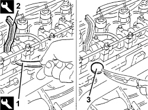
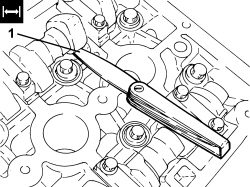
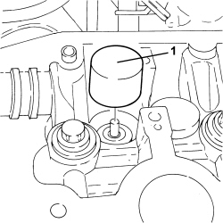

1036H10 VALVE TAPPETS - CHECK AND ADJUST CLEARANCE, IF NECESSARY
- Path
- Procedures > 10 ENGINE > 1036 TIMING SYSTEM > 1036H TAPPETS AND ROCKER SHAFTS > 1036H10 VALVE TAPPETS - CHECK AND ADJUST CLEARANCE, IF NECESSARY
- Kind
- repair procedure (removal / refitting; the operation number is the code)
- Applies to
- engines: 1.8, 1.9 JTD 8v; all production periods
- Interactive page
- https://sloeber94.github.io/elrnDB-fCrm/en/#/194002154
Applies to: engines: 1.9 JTD 8v; all production periods
Op. 1016A10 SOUND-PROOFING COVER - R.R
Op. 1036H14 VALVE TAPPETS - CHECK CLEARANCE
1. Lower the tappet in question using the tool.
Tool | Description | Function | Validity |
|---|---|---|---|
1860443000 | Lever | Lower valve tappets | 1.9 JTD 8V |
2. Fit the tool for keeping the tappet lowered, then remove the pressure lever positioned previously.
Tool | Description | Function | Validity |
|---|---|---|---|
1860724001 | Lever | Keep valve tappets lowered | 1.9 JTD 8V |
3. Remove the valve clearanance adjustment plate and replace it with a one of a suitable thickness.
- Remove the tool for keeping the tappet lowered.
- Continue, repeating the procedure described for the remaining valves.

Applies to: engines: 1.9 JTD 8v; all production periods
Applies to: engines: 1.8; all production periods
 Removing
Removing
 Refitting
RefittingOp. 1016A40 IGNITION COIL COVER ON CYLINDER HEAD - R+R
Op. 5510C14 IGNITION COIL/S - R.R.
Op. 1016A20 SINGLE TAPPET COVER -R.R AND REPLACE GASKET
- Adjust the bolt fixing the auxiliary shaft drive pulley until the valve concerned is in the closed position (cams facing upwards).
1. With the engine cold, use a feeler gauge to check that the valve clearance is within the specified limits with the valves closed.
Measurement | Value | Validity |
|---|---|---|
Inlet valve clearance in closed position (mm) | 0.21 ÷ 0.29 | 1.8 |
Measurement | Value | Validity |
|---|---|---|
Exhaust valve clearance in closed position (mm) | 0.27 ÷ 0.35 | 1.8 |

Applies to: engines: 1.8; all production periods
- If the tappet clearance is not within the recommended tolerance, remove the camshaft involved and replace the cups selecting the size according to the required clearance.
Applies to: engines: 1.8; all production periods
Op. 1036C41 PHASE TRANSFORMER ON OVERHEAD CAMSHAFT (ONE) INTAKE EXHAUST ON CYLINDER HEAD - R.R.
Op. 1008B10 POWER UNIT FRONT SUPPORT FLEXIBLE MOUNTING (TIMING SIDE) - REPLACE
Op. 1008A46 POWER UNIT RIGID SUPPORT - TIMING SIDE - R.R.
Op. 1032C10 TIMING SYSTEM MOVING TENSIONER - R.R WITH TIMING BELT/CHAIN REMOVED
Op. 1032D31 PROTECTIVE TIMING INNER COVER - R.R. WITH TIMING BELT REMOVED
1. Remove the cup involved in the adjustment from its housing.

Applies to: engines: 1.8; all production periods
Refitting
Removing- Place the new cup in position.
Op. 1032D31 PROTECTIVE TIMING INNER COVER - R.R. WITH TIMING BELT REMOVED
Op. 1032C10 TIMING SYSTEM MOVING TENSIONER - R.R WITH TIMING BELT/CHAIN REMOVED
Op. 1008A46 POWER UNIT RIGID SUPPORT - TIMING SIDE - R.R.
Op. 1008B10 POWER UNIT FRONT SUPPORT FLEXIBLE MOUNTING (TIMING SIDE) - REPLACE
Op. 1036C41 PHASE TRANSFORMER ON OVERHEAD CAMSHAFT (ONE) INTAKE EXHAUST ON CYLINDER HEAD - R.R.
- After fitting the new cups, repeat the procedure for checking the tappet clearance.
Op. 1016A20 SINGLE TAPPET COVER -R.R AND REPLACE GASKET
Topics linked from this page (11)
- 1008A46 POWER UNIT RIGID SUPPORT - TIMING SIDE - R.R.
- 1008B10 POWER UNIT FRONT SUPPORT FLEXIBLE MOUNTING (TIMING SIDE) - REPLACE
- 1016A10 SOUND-PROOFING COVER - R.R
- 1016A20 SINGLE TAPPET COVER -R.R AND REPLACE GASKET
- 1016A40 IGNITION COIL COVER ON CYLINDER HEAD - R+R
- 1032C10 TIMING SYSTEM MOVING TENSIONER - R.R WITH TIMING BELT/CHAIN REMOVED
- 1032D31 PROTECTIVE TIMING INNER COVER - R.R. WITH TIMING BELT REMOVED
- 1036C10 CAMSHAFTS IN CAMSHAFT HOUSING - R.R - INCLUDES CAMSHAFT HOUSING REPLACEMENT, IF NECESSARY
- 1036C41 PHASE TRANSFORMER ON OVERHEAD CAMSHAFT (ONE) INTAKE EXHAUST ON CYLINDER HEAD - R.R.
- 1036H14 VALVE TAPPETS - CHECK CLEARANCE
- 5510C14 IGNITION COIL/S - R.R.
Topics that link to this page (9)
- D005 ENGINE DOES NOT PRODUCE BEST PERFORMANCE
- D010 ENGINE IDLE IRREGULAR
- D012 ENGINE IDLING TOO LOW
- 0010K60 60,000KM SERVICE
- 0010M20 120,000KM SERVICE
- 0010M50 150,000KM SERVICE
- 0010M80 180,000KM SERVICE
- 1036H14 VALVE TAPPETS - CHECK CLEARANCE
- 1036H18 VALVE TAPPETS - ADJUSTMENT FOLLOWING CLEARANCE CHECK